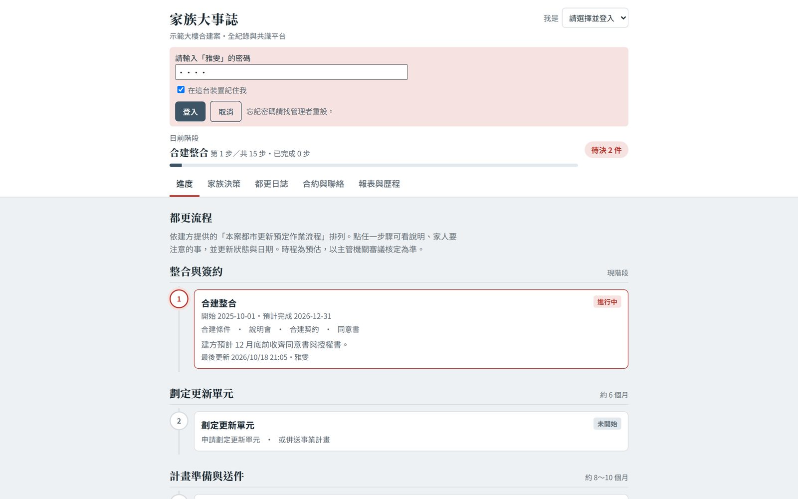
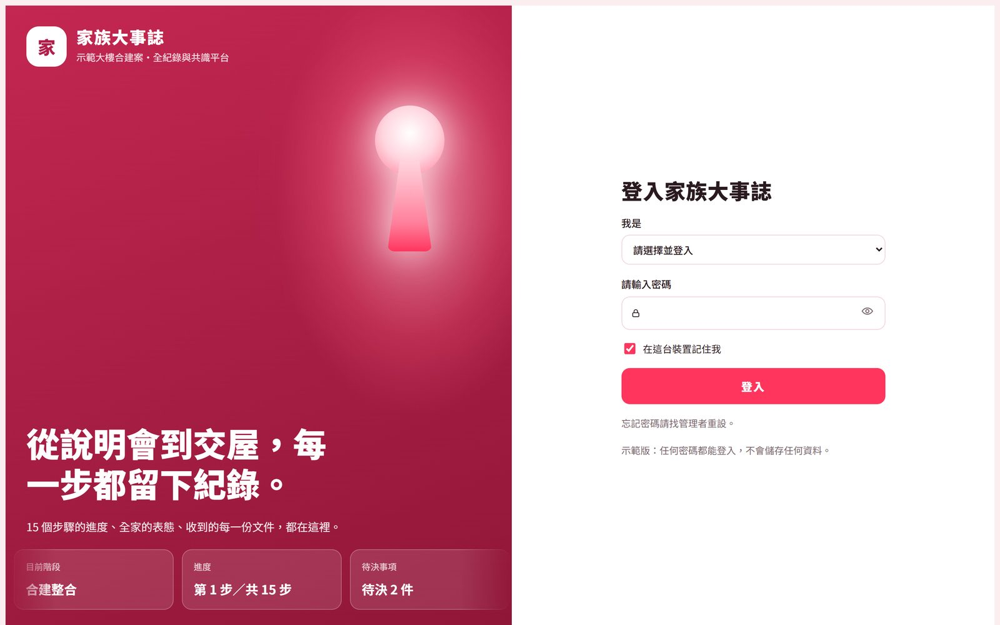
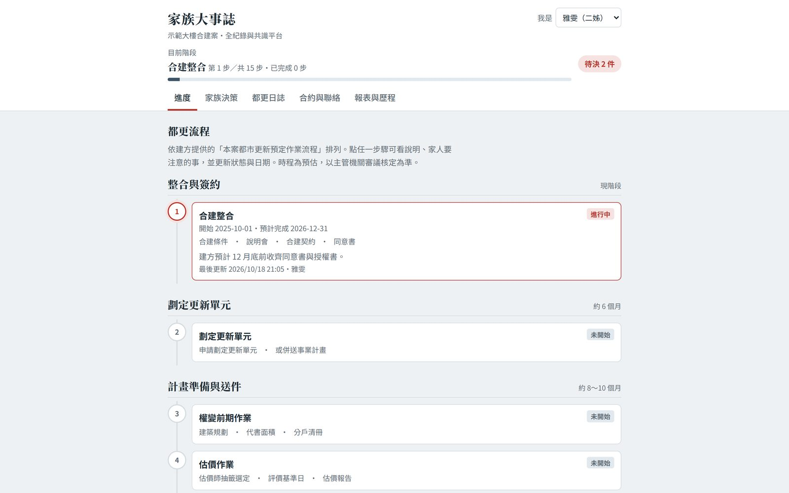
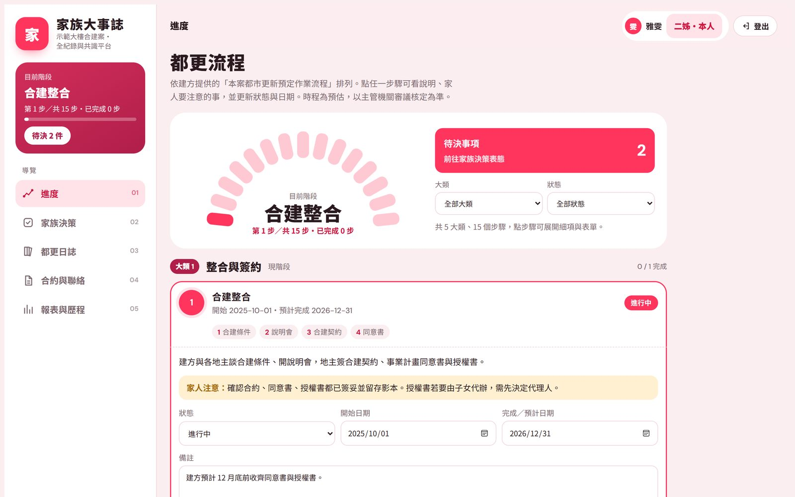

服務 / 差異化介面設計
UI DESIGN
差異化介面設計
功能不動，
讓畫面成為你的銷售優勢
你的系統本來就專業。差異化介面設計只換外觀與動線：功能一個不拆、資料不搬、連結不換，讓畫面更吸睛，在展示、簡報與提案時，比功能相近的同業更有記憶點。先做風格定調，再用你的真實內容做一頁預覽，確認風格之後才開工。
常見情況
如果你也有這些想法
- 想換新樣子，又怕動到功能和資料
- 展示、簡報與提案時，希望畫面更吸睛
- 功能和同業相近，想靠視覺拉開差距
風格定調台
把「說不出來的感覺」，變成看得到的選擇
色號、氣質、版面、圓角、互動，一項一項點，畫面馬上跟著變。確認的是同一張定調單，不是各自想像。示意畫面・虛構系統
本月營運總覽＋ 新增案件
進行中案件128
待簽核16
本週完成42
會員資料更新完成已完成
年度會費待確認處理中
你的風格定調單
功能一個不拆、資料不搬。這裡是示意；正式色碼與版面，在風格確認時用你的真實內容一起定。
客戶案例：換之前、換之後
同一套功能，換了畫面以後




家族都更共識平台：功能一個不拆，只換視覺。畫面中的姓名、建案、金額均為示範資料。 看完整案例
怎麼進行
四步，從需求到交付
01
需求盤點
約 30 分鐘，了解你的系統、客群，以及你希望畫面在展示、簡報與銷售上幫上什麼忙。
02
風格定調
用定調單把色號、氣質、版面、圓角、互動一項項確認，說不出來的感覺變成看得到的選擇。
03
風格確認
先用你的真實內容做 1 頁預覽，你確認風格才開工。
04
規格定稿・製作
頁數、功能模組、修改次數先寫清楚；內容由你提供。
服務內容
你會拿到什麼
適用已經有系統，想讓畫面更吸睛、更有優勢的軟體商或企業
不動的功能一個不拆、資料不搬、連結不換
交付換好視覺的完整畫面與主題檔，付清尾款後交付
修改一輪＝一次整批意見；確認階段 2 輪、正式階段 3 輪，超出另計
網域、空間由你自付，我們不代管
授權非獨家買斷、限單一產品，不得單獨轉售介面皮
方案與費用歡迎加 LINE 詢問，我們依你的情況說明
想先看做出來的樣子，可以看客戶案例：家族都更共識平台。